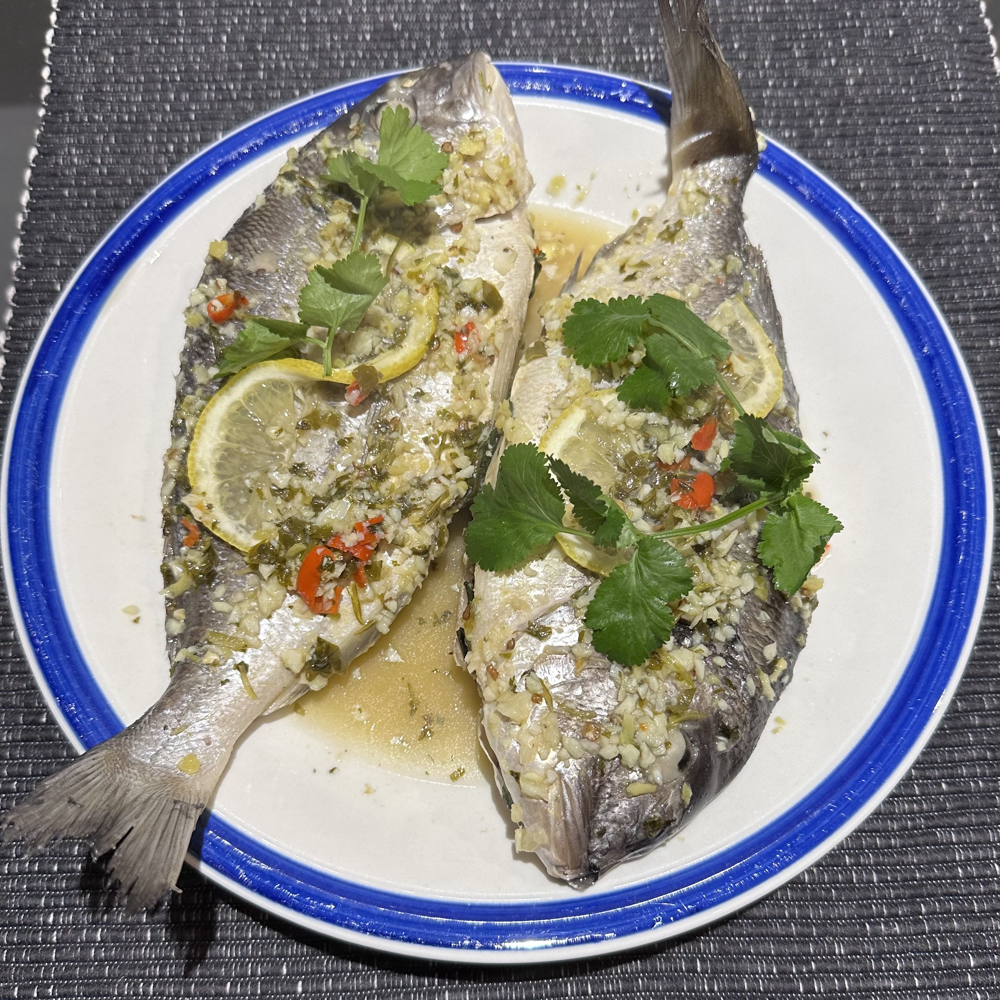

Lemon Garlic Steamed Sea-bream

Description
A burmese style steamed fish. It tastes sour, spicy and refreshing!
Ingredients
- Seam-bream
- Garlic, Coriander, Ginger
- Green & Red chillies, Lemon
- Salt & Fish sauce
Steps
- Crush garlic, coriander, ginger, and chillies into a fine paste and add lemon juice to it.
- Clean & prep the fish if not already done
- Place the fish marinated with the paste into a steaming bowl
- Steam for 15 minutes